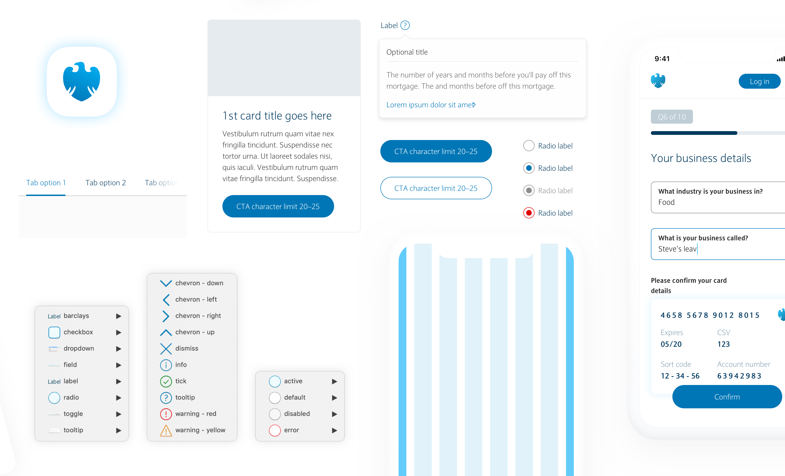
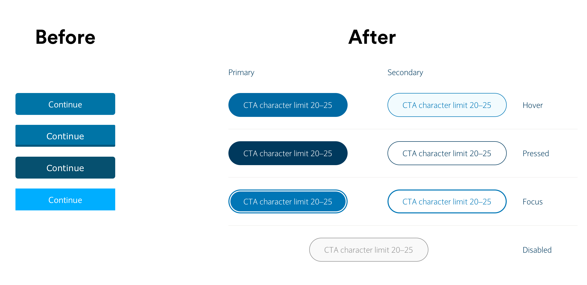
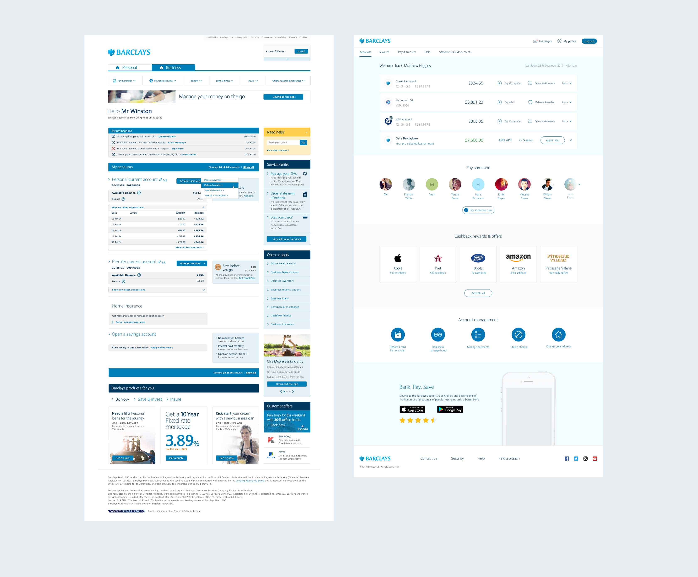

The problem
Not one source of truth for front end within Barclays for both design assets and code. Lots of design teams and external agencies doing their own thing resulting in a fragmented customer experience.
The solution
Create the foundations of a design system, get buy in and involve other designers, product owners and engineers across teams, output is an ever evolving Sketch file, code and documentation site.

The button
There were 4 different designs for the Barclays primary button, each having a different size, font and border radius.

- Increase from 44 to 48px height
- Font size 18px from 17px
- Corner radius from 5px to 100px
- Changed the blue for all components to a less browner blue
The card
Cards were difficult to use because of image restraints, looked messy when together and didn't have flex for different variations.

- Corner radius from 0px to 8px
- Introduce hover state, image zoom
- Allow configurations for flexibility (image, no image, button, no button etc)
- On white and on grey background
Code for developers
It’s important as a designer to face the fact that no customer or user will ever see our design files in real life.
So it was crucial that we created a a pixel perfect replica of the Sketch library in code format. I was asked to lead a team of front-end developers to create a HTML, CSS, Angular and React framework.
Testing for success
When making any design decisions, testing and data was at the forefront. I setup regular A/B tests to ensure that the smallest of changes were making a positive impact.
For larger and more complex patterns and components I opted for lab testing with customers. For this we coded up prototypes for the customers to play with, facilitated by a researcher we quickly gained insights on best approaches.
Guidance and documentation
I wanted to ensure that knowledge and thinking of the team was centrally stored and accessible to both internal employees and external agencies. We created a website to showcase the design system, but also provide our design thinking, research, testing and in-depth developer documentation. It also helps raise awareness to product owners and anyone new to the company.

Redesign in action
My project at the time was redesigning the homepage for our online banking website. We agreed to use this as the first project to go live with the new design. Since the success of it, it is now being used across all projctes and is the companies go-to design system.
